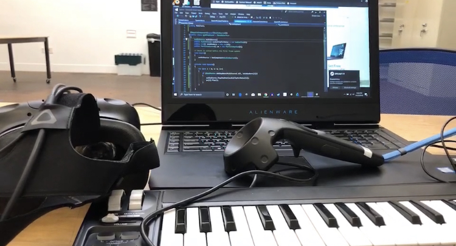
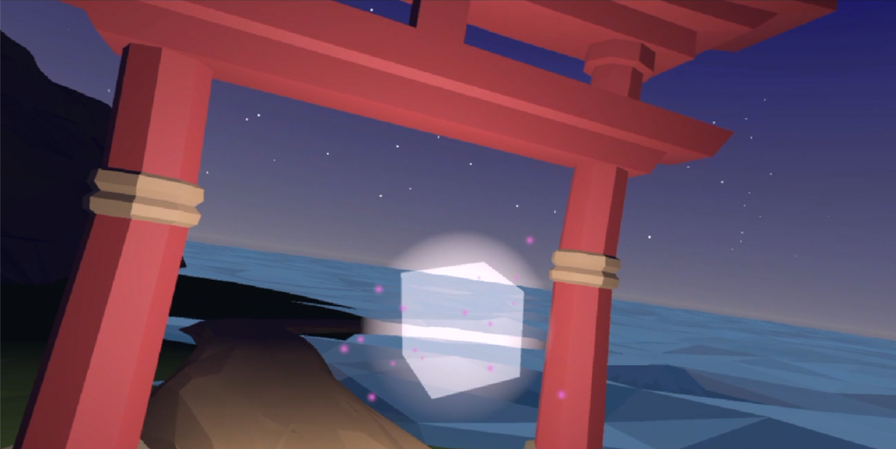
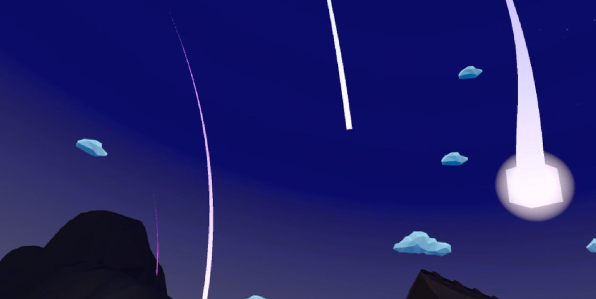
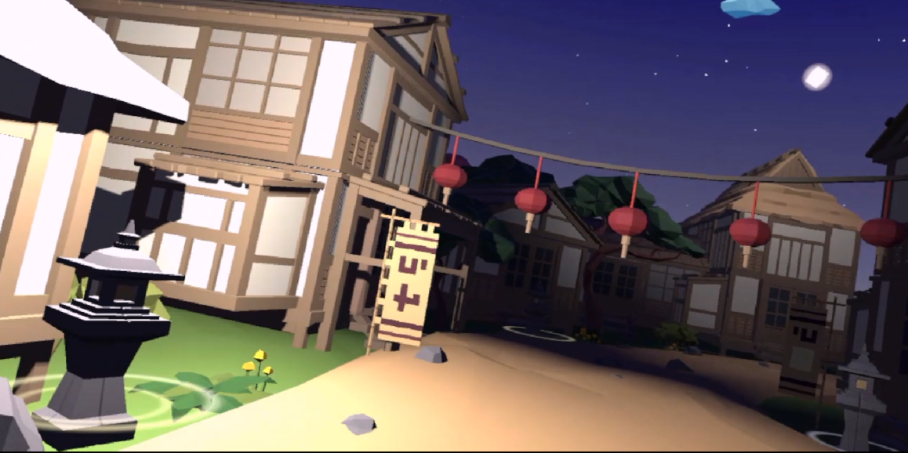
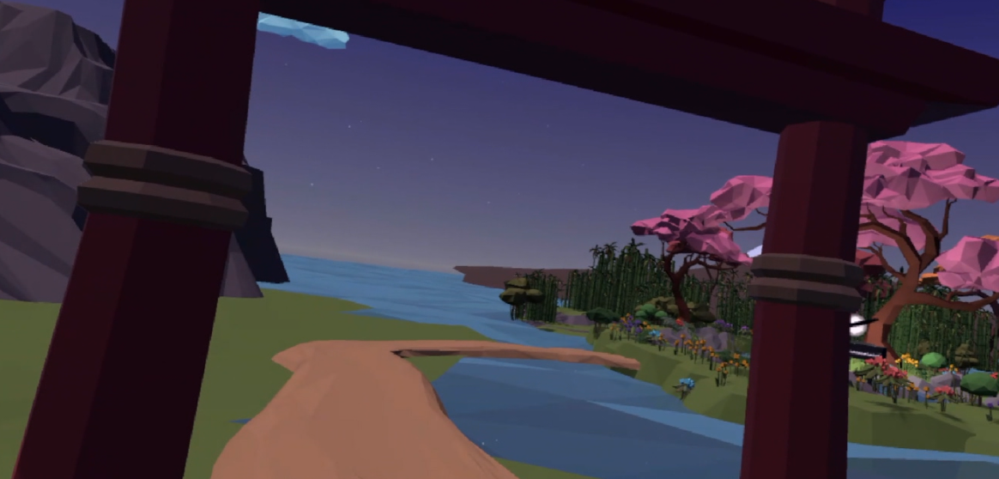
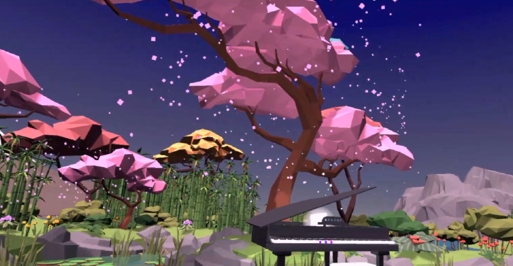

This is an exploration game in VR formate, where users can talk around, find objects around and trigger them to wake up this silent world. Here comes the demo video!
Project Equipment
HTC VIVE VR headset: User is able to have immersive perspective of the virtual world by putting on headset.
AKM320 keyboard: User is able to play music with MIDI keyboard in the scene.

Design Concepts
Leading Cube: Leading cube serves as a guide of your exploration journey, also it will interact with your music. According to the note number(C,D,E,F,G,A,B), the particals with red, orange, yellow, green, blue, cyan and purple.

Trail: Glowing trial is designed for aesthetics and more interaction. There are three trails in dofferent color: blue, purple and pink. the position of trails are following the leading cube, which means that they would cross the sky at the area you playing music. In terms of color, the color of trails in blue, purple and pink are depend on which combination of notes player presses (chord based).

Lantern Light: There is a night market scene, user can play music to turn the lanterns on for you. 
island Underwater: Cross the Torii gate, user will reach a sakura island

Piano Under Sakura Tree: Enjoy the piano experience under sakura tree! 
Future Work
Note Accuracy: note accuracy is not good when user pressing three or more keys and there is noticable delay for real-time audio playback. If changing real digital piano with midi interface would be a better choice, which allows user feel the more real piano playing experience while there is no delay for audio playback because the audio playback is an independent system, which will not use unity audio engine.
Audio Effect: adding audio effct to the music will be more interesting.